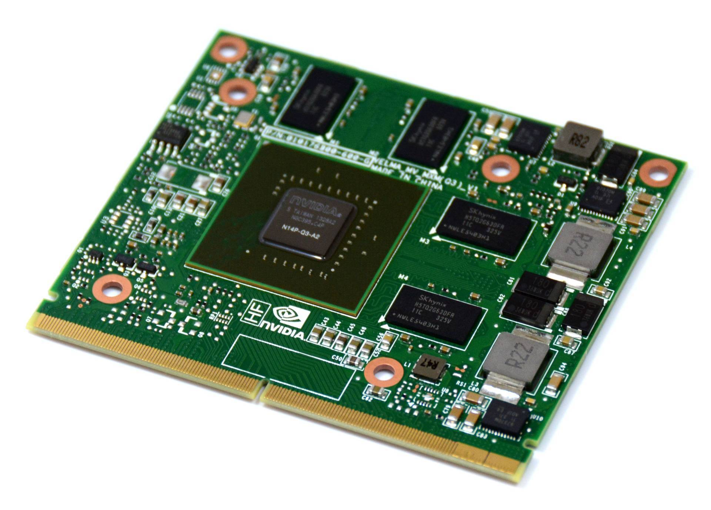

Интегрированные видеокарты
Интегрированные видеокарты встраиваются в процессоры или материнские платы. Они идеальны для повседневных задач, работы с офисными приложениями и легких игр.

Интегрированные видеокарты встраиваются в процессоры или материнские платы. Они идеальны для повседневных задач, работы с офисными приложениями и легких игр.
Дискретные видеокарты - это отдельные устройства, которые устанавливаются в материнскую плату. Они обеспечивают высокую производительность и подходят для игр, графических приложений и редактирования видео.
Профессиональные видеокарты предназначены для работы с графическими решениями и CAD/CAM системами. Они предлагают дополнительные функции и оптимизацию для специализированного программного обеспечения.